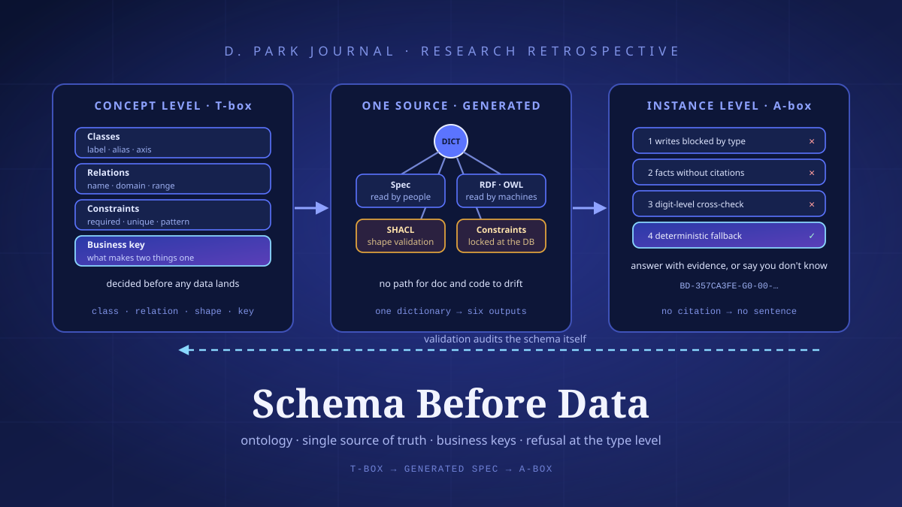
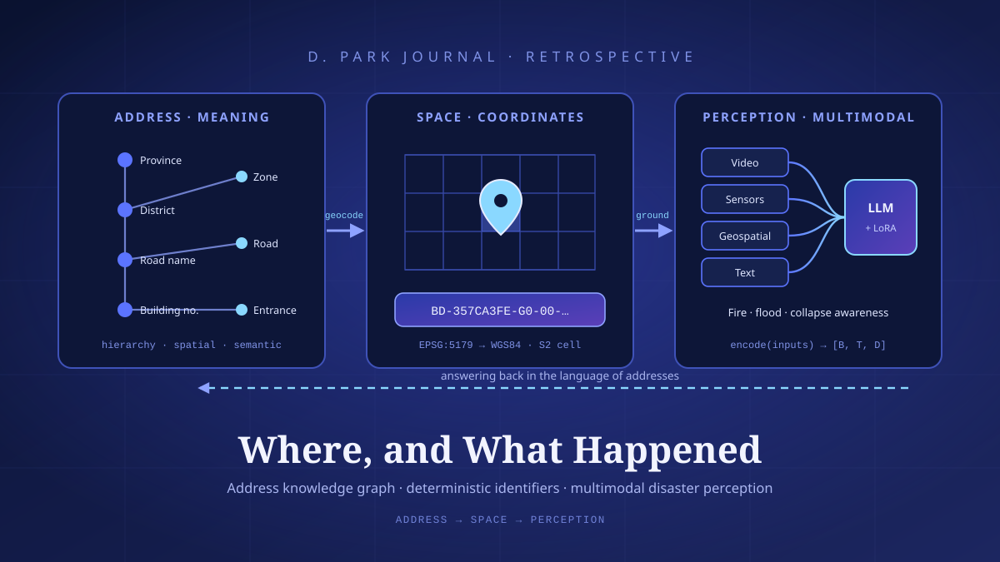

The Language Model That Reads Maps: GeoLLM and Knowledge Graphs
Asked 'where is the nearest incinerator,' a language model gives a plausible but wrong answer. A build log of GeoLLM/GNLM that filled that gap with RAG, PostGIS, and a knowledge graph.

Why Language Models Can't Read Maps
Ask a language model “how far is it from Seoul to Busan,” and a plausible number comes back — because that fact appeared often in its training data. But ask it to “list every school zone within a 500 m radius of my location,” and the story changes. The model doesn't know my coordinates, has no means to perform the topological operation that “within 500 m” requires, and holds no up-to-date boundary data for school zones. Yet it does not fall silent. Confidently, it fabricates a list — and gets it wrong.
This is less a defect of the model than a mismatch of kind. An LLM is not an engine that ‘computes’ facts on a coordinate system; it is a machine that ‘predicts’ the most plausible sentence to follow a context. The spatial relations at the heart of geographic queries — distance, containment, adjacency — are solved precisely only by geometric computation, not by the statistical patterns of text. The two worlds run on different grammars. So when a geographic question is handed to a language model whole, the model fills the gap with what it does best — making things up. This is the phenomenon we commonly call hallucination.
At KAIST, I took up this problem while planning a Korean geospatial language model (K-GeoLLM) in partnership with the Ministry of Land, Infrastructure and Transport and the National Geographic Information Institute. The goal was clear: when a user poses a geographic question in natural language, the system translates it into precise spatial operations, computes the answer over real GIS data, and returns the result as human-readable text and a map. It was a matter of reconciling the flexibility of language with the rigor of geometry inside a single pipeline.
Translating Language into Spatial Operations
The first approach used the language model as the ‘brain’ of the pipeline while delegating the actual computation to a dedicated engine. For the base model we chose Llama-3 8B Bilingual, which handles Korean and English together, and adapted it to the geographic domain through LoRA/PEFT-based SFT (supervised fine-tuning). Training ran on two NVIDIA A6000 GPUs. The 8B size was a deliberate choice — in an environment that must handle public data on-premises, the system had to run without handing that data over to a giant commercial model.
The pipeline flows through five stages.
① Intent Recognition
First, the system classifies what the user's sentence is asking for. “The nearest ○○” is a nearest-neighbor query, “○○ within a radius” is a buffer query, and “from A to B” is a distance query. Combining few-shot prompting with named-entity recognition (NER), it extracts both the query type and entities such as place names and facility names. If this stage wavers, every downstream computation points in the wrong direction — so it is the gate we labored over most.
② RAG Retrieval
Next, the system pulls in the context and data related to the query. It finds semantically close documents in a FAISS vector database while, at the same time, querying actual spatial records in PostgreSQL/PostGIS. If the vector search narrows down “what the question is about,” the relational and spatial database supplies “the source data for the answer.” Their roles differ.
③ Function Calling
This is the core. The model does not ‘imagine’ distances or containment relationships on its own. Instead it invokes PostGIS spatial functions such as ST_DWithin (containment within a radius) and ST_Distance (distance calculation) as JSON-form tool calls. The topological operations are performed entirely by the database; the model only decides which function to call with which arguments. Responsibility for computation is handed back to the computation engine.
④ Result Synthesis
The model weaves the coordinates, distances, and lists returned by the database back into natural language. Here the model does only what it is good at — turning tables into prose, adding context, and organizing it to read well. Since the numbers are values guaranteed by the computation engine, there is less room to make them up.
⑤ Map Visualization
Finally, the results are laid over a Leaflet-based map. Spatial relationships that don't quite register from text alone are grasped at once when seen as points and radii on a map. The reliability of the answer, too, is confirmed by eye.

Reweaving the Map as a Knowledge Graph
As the pipeline matured, a more fundamental question arose: could geographic information be represented, from the start, in a structure that language models handle well? What emerged was GNLM (Graph-Native Language Model). The key was to represent geographic knowledge not as text but as a knowledge graph of RDF triples (subject–relation–object). The graph we built consisted of 58,882 nodes and 80,088 relations — a structure capable of road-name-address-based spatial reasoning.
The power of a knowledge graph comes from making relations explicit. Facts like “this building abuts this road” or “this administrative dong belongs to this district” are not scattered through text but nailed down as traversable edges. On top of this we placed a 14-Strategy Reasoning Router — a mechanism that routes each incoming question, according to its character, to a strategy for traversing the graph. Nearest-neighbor search, path tracing, attribute lookup, aggregation — because the optimal path differs from question to question.
And as a last line of defense we placed a Fact Validation Layer. Rather than emitting the model's generated answer as is, this stage cross-checks the factual claims within it against the knowledge graph to confirm they are supported. Any claim of a relation absent from the graph is filtered out. This validation layer reached 96.7% accuracy, serving as the final lock that upholds the answer's reliability.
Chapter 4. MeasurementStructure Beats Size
We scored the three approaches on the same 250-question QA set. The results came down firmly on the side of structure.
| Approach | Composition | QA Accuracy |
|---|---|---|
| Bare LLM | Model alone, no context | 57.1% |
| Plain RAG | Vector retrieval + generation | 31.4% |
| GNLM | Knowledge graph + validation | 88.4% |
What stands out is how poorly plain RAG did. Adding context actually made it worse than the bare LLM. In geographic queries, the “semantically similar” documents that vector search pulled in were routinely at odds with the exact coordinates and relations actually needed. Similarity is not the right answer in geography. GNLM, by contrast — holding relations explicitly and validating its answers — climbed to 88.4%. How the data is structured mattered more than how much is retrieved.
Chapter 5. An Unexpected FindingWhy an 8B Model Beat GPT-5.2
The biggest surprise of the experiment lay elsewhere. When we swapped various models into the same GNLM structure and compared them, small open models like qwen3:8b and llama3.1:8b beat large commercial ones like GPT-5.2 and Claude Sonnet 4.5 by 7–11 percentage points. It ran against common sense. Isn't a bigger model supposed to do better?
The answer lay in the division of labor. Within the GNLM structure, the language model's job is not ‘to remember knowledge’ but ‘to traverse the graph and weave validated facts into sentences.’ The source of fact is the knowledge graph, and truth is adjudicated by the validation layer. In this structure, how faithfully the model follows the given structure matters more than how much it knows. A large model's vast parametric knowledge was, if anything, surplus — and at times it erred by putting its own memory ahead of the facts the graph had supplied.

Build the Structure Before Scaling the Model
The view through the narrow window of geographic QA is, in fact, a question posed to generative AI as a whole. When we try to raise performance, we reflexively reach for a bigger model. But the experience of GeoLLM and GNLM pointed the other way. Redefine the problem with the right structure — leave computation to the computation engine, facts to the knowledge graph, and validation to the validation layer — and even an 8B model could outperform giant commercial ones.
One thing must be made clear, though. This system does not replace sensitive judgments such as public policy or land-use planning. The answers to questions like where to site an incinerator, the impact of a landfill, or shifts in home values touch citizens' lives directly. GeoLLM is only an assistive tool that hands accurate spatial information quickly to the experts who make such judgments; the final decision-maker must always be a person. The virtue of a good tool lies in honestly revealing its own limits. The more powerful the model becomes, the more important it is to design those limits.
References
- D. Park et al. (second author), “A Declarative Geographic Knowledge Graph Framework,” IEEE Access, 2026. DOI: 10.1109/ACCESS.2026.3695549.
- D. Park et al. (second author), “GNLM: A Graph-Native Language Model With Road Name Address-Based Spatial Reasoning,” IEEE Access, 2026. DOI: 10.1109/ACCESS.2026.3705784.
- The figures in this article (QA accuracy, node and relation counts, model comparisons, etc.) are representative results from the studies; specific values may vary depending on the dataset, evaluation set, and model version.
Read next

Research · Retrospective23Schema Before Data: Four Things an Ontology Buys a Knowledge Graph
A meeting about building a knowledge graph opens with talk of data, but the first thing that lands in the repository is not data — it is a dictionary. What shall we call a class, what counts as a relation, which key decides that two records are the same thing. Settled before a single row is loaded, these decisions look like bureaucracy whose only product is longer meetings. Putting a national address knowledge graph on top of a national standard ontology taught me the opposite. Fixing the schema first is a payment, and there is something definite you get for it.

Research · Retrospective22Where, and What Happened: Wiring an Address Knowledge Graph to Multimodal Disaster Perception
The language of a disaster scene arrives as an address. But the judgement is made from video and sensors. Between those two languages sits a gap nobody fills for you. This year I built two pieces of software, one on each side of it — a knowledge graph that resolves addresses into coordinates and relations, and a perception API that reads four modalities on a single backbone. This is a record of trying to make them one stack, and of what is still undone.